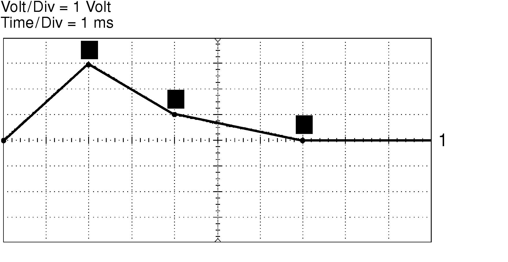
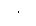
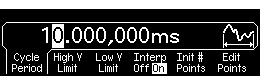
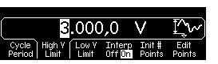
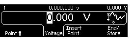
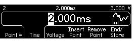
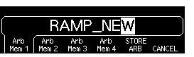

To Create and Store an Arbitrary Waveform
This section gives an example which shows you how to create and store an arbitrary waveform from the front panel. To download an arbitrary waveform from the remote interface, see "Arbitrary Waveform Commands" starting on page 198. For this example, you will create and store the ramp waveform shown below using four waveform points.
1 Select the arbitrary waveform function.When you pressto select the arbitrary function, a temporary message is displayed indicating which waveform is currently selected.2 Start the arbitrary waveform editor.Press the Create New softkey to start the waveform editor. While in the waveform editor, you define the waveform by specifying time and voltage values for each point in the waveform. When creating a new waveform, the previous waveform in volatile memory is overwritten.3 Set the waveform period.Press the Cycle Period softkey to set the time boundaries for the waveform. The time value of the last point that can be defined in the waveform must be less than the specified cycle period.For this example, set the period of the waveform to 10 ms.
4 Set the waveform voltage limits.Press the High V Limit and Low V Limit softkeys to set the upper and lower voltage levels that can be reached while editing the waveform. The upper limit must be greater than the lower limit. By default, Point #1 is set equal to the upper limit and Point #2 is set equal to the lower limit.For this example, set the upper limit to 3.0 V and the lower limit to 0 V.
5 Select the interpolation method.Press the Interp softkey to enable or disable linear interpolation between waveform points (this feature is available from the front panel only). With interpolation enabled (default), the waveform editor makes a straight-line connection between points. With interpolation disabled, the waveform editor maintains a constant voltage level between points and creates a "step-like" waveform.For this example, turn on linear interpolation.6 Set the initial number of waveform points.You can create an arbitrary waveform with up to 65,536 (64K) points. The waveform editor initially builds a waveform with two points and automatically connects the last point of the waveform to the voltage level of the first point to create a continuous waveform. Press the Init # Points softkey to specify the initial number of waveform points (you can add or remove points later if necessary).For this example, set the initial number of points to "4".7 Start the point-by-point editing process.Press the Edit Points softkey to accept the initial waveform settings and begin point-by-point editing. The status line at the top of the display window shows the point number in yellow, the time value of the current point in green, and the voltage value of the current point in magenta.8 Define the first waveform point.Press the Voltage softkey to set the voltage level for Point #1 (this point is fixed at a time of 0 seconds). By default, Point #1 is set equal to the upper limit.For this example, set the voltage level of Point #1 to 0 V.
The waveform editor performs all amplitude calculations using Vpp, rather than Vrms or dBm.9 Define the next waveform point.Press the Point # softkey and then turn the knob to move to Point #2. Press the Time softkey to set the time for the current point (this softkey is not available for Point #1). Press the Voltage softkey to set the voltage level for the current point.For this example, set the time to 2 ms and the voltage level to 3.0 V.
10 Define the remaining waveform points.Using the Time and Voltage softkeys, define the remaining waveform points using the values shown in the table below.· The time value of the last point that can be defined in the waveform must be less than the specified cycle period.· The waveform editor automatically connects the last waveform point to the voltage level of first point to create a continuous waveform.· To insert additional points after the current waveform point, press the Insert Point softkey. The new point is inserted midway between the current point and the next defined point.· To remove the current waveform point, press the Remove Point softkey. The remaining points are joined using the interpolation method currently selected. You cannot remove Point #1 since the waveform must have a defined initial value.11 Store the arbitrary waveform in memory.Press the End / Store softkey to store the new waveform in memory. Then press the DONE softkey to store the waveform in volatile memory or press the Store in Non-Vol softkey to store the waveform in one of four non-volatile memory locations.You can assign a custom name to the four non-volatile memory locations.· The custom name can contain up to 12 characters. The first character must be a letter but the remaining characters can be letters, numbers, or the underscore character (" _ ").· To add additional characters, press the right-arrow key until the cursor is to the right of the existing name and then turn the knob.· To delete all characters to the right of the cursor, press thekey.For this example, assign the name "RAMP_NEW" to memory location 1 and then press the STORE ARB softkey to store the waveform.

The waveform is now stored in non-volatile memory and is currently being output from the function generator. The name that you used to store the waveform should now appear in the list of stored waveforms (under the Stored Wform softkey).